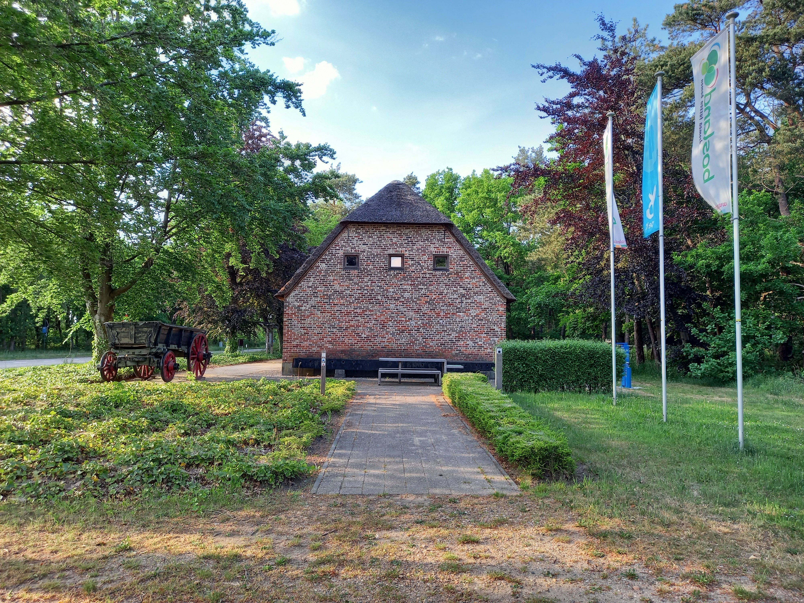

Galerij Afbeeldingen Sevensmolen Afbeeldingen Molenmuseum Geluid Afbeeldingen Sevensmolen Sfeerbeelden van de omgeving van de Sevensmolen. Afbeeldingen Molenmuseum  Sfeerbeelden van de omgeving van het Molenmuseum. Geluid
 Sfeerbeelden van de omgeving van de Sevensmolen.
Sfeerbeelden van de omgeving van de Sevensmolen.